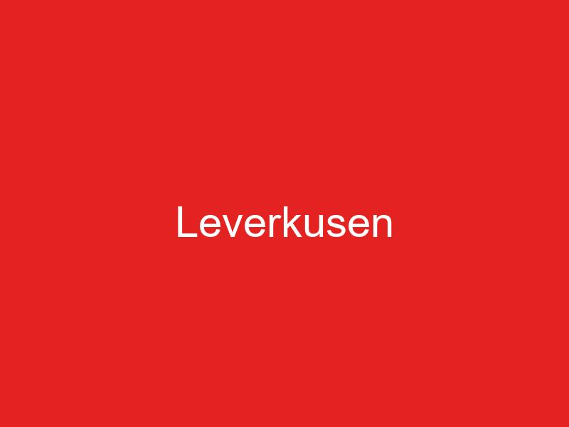

Bayer Leverkusen erlebt unter Trainer Xabi Alonso eine Märchen-Saison. Die Werkself liegt aktuell auf Platz zwei der Bundesliga und mischt im Titelrennen kräftig mit. Nach Jahren der Enttäuschungen könnte endlich der große Wurf gelingen.
Xabi Alonsos Revolution
Der spanische Trainer hat Leverkusen komplett neu ausgerichtet. Sein auf Ballbesitz basierendes 3-4-3 System überrollt die Gegner regelrecht. Die Mannschaft zeigt spektakulären Offensivfußball und überzeugt mit einer durchschnittlichen Ballbesitzquote von 62%.
Wirtz als kreativer Motor
Florian Wirtz ist der Star des Teams. Der 20-jährige Nationalspieler hat sich zu einem der besten Mittelfeldspieler Europas entwickelt. Mit 14 Toren und 16 Vorlagen ist er der zentrale Spielmacher der Werkself. Seine Kreativität und Technik sind beeindruckend.
Die Offensive glänzt
Victor Boniface führt mit 19 Toren die Torjägerliste an. Der nigerianische Stürmer ist die perfekte Spitze für Alonsos System. Zusammen mit Jeremie Frimpong auf der rechten Seite und Álex Grimaldo links verfügt Leverkusen über eine der gefährlichsten Offensiven der Liga.
Defensive Stabilität
Trotz des offensiven Spiels steht auch die Defensive sicher. Jonathan Tah und Edmond Tapsoba bilden ein starkes Innenverteidiger-Duo. Die Dreierkette gibt den Flügelspielern die Freiheit, nach vorne zu stürmen.
Der Kampf um die Meisterschaft
Mit nur drei Punkten Rückstand auf Bayern München ist alles möglich. Die direkten Duelle gegen die Konkurrenz werden entscheidend sein. Leverkusen hat den Vorteil, dass die Mannschaft keinen Druck hat - alles kann, nichts muss.
Die Mentalität stimmt
Was diese Saison anders macht: Die Mannschaft zeigt eine beeindruckende Mentalität. Spiele, die in der Vergangenheit verloren gegangen wären, werden jetzt gedreht. Das Team glaubt an sich und den Erfolg.
Fazit: Bayer Leverkusen erlebt unter Xabi Alonso eine sensationelle Entwicklung. Der Traum von der ersten Meisterschaft seit Vereinsgründung ist greifbar nah. Die Mischung aus jungen Talenten und erfahrenen Spielern unter einem innovativen Trainer könnte die Geschichte schreiben.